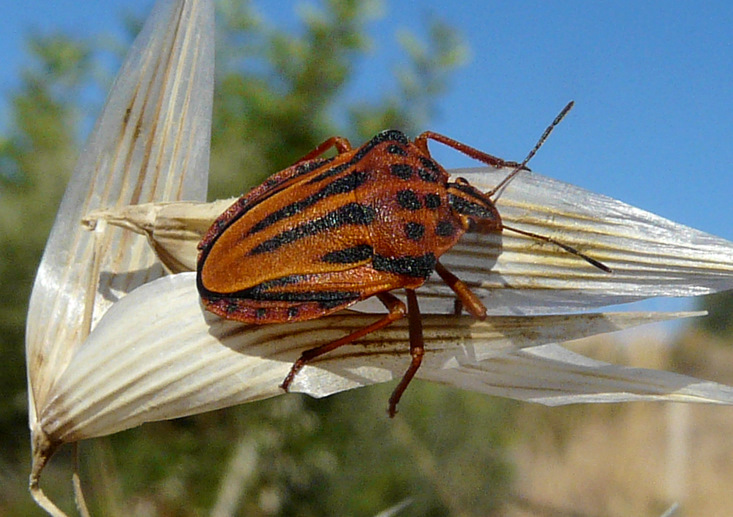
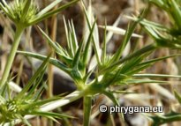
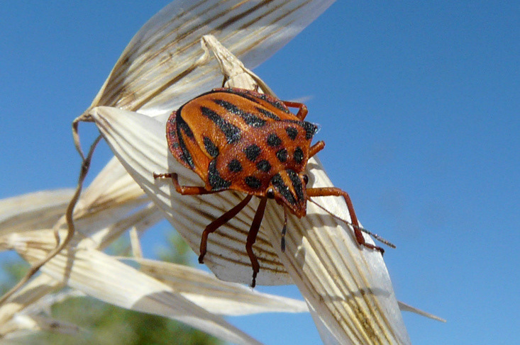
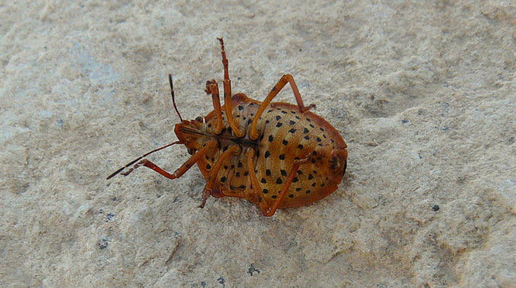
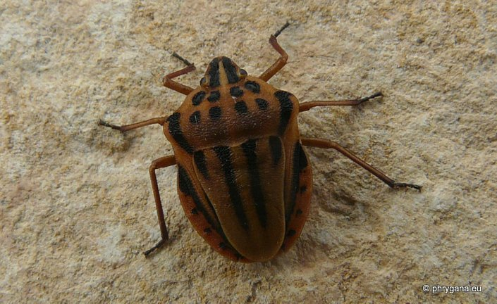
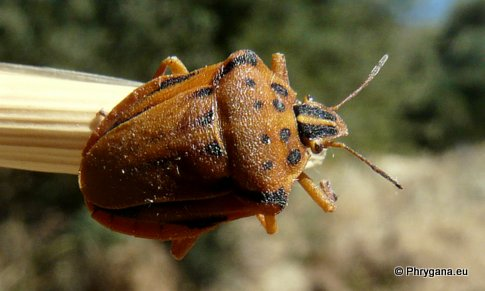
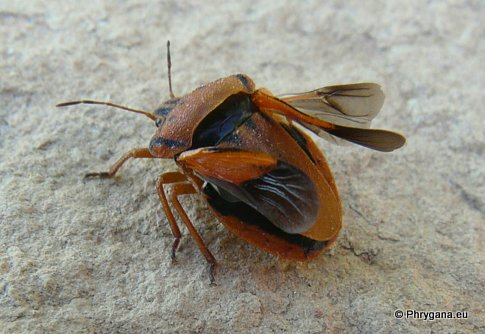

| PHRYGANA | Fauna | Flora | Galles | liste des espèces |
contact -
info - commentaires phrygana1 (at) gmail.com |
| Particularités crétoises | nouveautés | Mines | ressources naturelles |
| Graphosoma semipunctatum (Fabricius 1775) |
| 166 | Fauna | PENTATOMIDAE | Podopinae | Graphosoma Laporte 1833 |
|
 Graphosoma semipunctatum Melambes (Agios Giorgos) 29 juin 2010 |
| le Graphosome ponctué -- Half-spotted Stinkbug | |
| Longueur du corps entre 8 et 12 mm. Couleur de fond brun rouge avec des lignes noires longitudinales, remplacées par des points noirs sur le pronotum; 2 lignes noires sur la tête. Pattes de couleur brun rougeâtre. Antennes noires | |
| Régime alimentaire: phytophage (essentiellement opophage -suceur de sève)) surtout sur des Apiaceae (dont Eryngium campestre, Eryngium maritimum). | |
| Oeufs pondus par petits groupes sur les tiges ou les feuilles. Eclosion après une dizaine de jours. | |
| Espèce probablement plurivoltine | |
| Période de vol: mai juin juillet novembre | |
| Statut en Crète: indigène | |
| Biotopes en Crète: phrygana, olivaies, garrigue, bords de chemins, jardins, terrains vagues. | |
| Distribution: Europe méridionale et centrale, Turquie, Proche-Orient. | |
| Punaise phytophage: diverses Apiaceae dont: | ||
|  |
|
|
| Eryngium campestre | Eryngium maritimum | |
|
 Graphosoma semipunctatum Melambes (Agios Giorgos) 29 juin 2010 |
|
 Graphosoma semipunctatum Melambes (Agios Giorgos) 29 juin 2010 |
|
 Graphosoma semipunctatum Melambes (Agios Giorgos) 22 novembre 2011 |
|

 Graphosoma semipunctatum Melambes (Agios Giorgos) 26 mai 2013 |
| 20 août 2012 |
| © paul fontaine -- © Phrygana.eu 2007 -- 2013 |